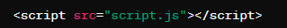
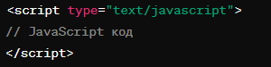

Тема, мета, місце розташування лаби
Способи функціонального застосування JAVASCRIPT
Пункт 4. Масиви
Пункт 6
Завдання 5.2
Висновки
Тег <script>
Тег <script> - це HTML-тег, який використовується для включення JavaScript коду в HTML-документ. Він дозволяє вбудовувати JavaScript код безпосередньо в сторінку, що дозволяє створювати інтерактивні веб-сайти, змінювати вміст сторінок динамічно, реагувати на події користувача та виконувати інші завдання
Основні атрибути тегу <script> :
- src: Цей атрибут вказує шлях до зовнішнього файлу JavaScript, який повинен бути включений. Cлугує альтернативою вставки скрипта беспосередньо в документ Наприклад: 
- type: Цей атрибут вказує тип мови скрипту, який використовується в тегу <script>. Зазвичай він має значення "text/javascript", але це значення за замовчуванням і може бути опущеним. 
Розміщення тегу <script> :
Тег <script> може бути включений в різні частини HTML-документа, такі як:
- У розділі <head> : Це місце, де зазвичай включають скрипти, які не впливають на відображення сторінки, але виконують інші завдання, наприклад, завантаження ресурсів чи налаштування.
- Після вмісту сторінки (перед закриваючим тегом